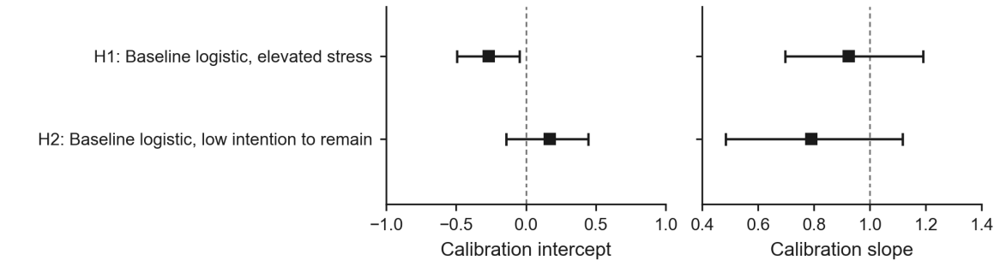

Figure 1. Participant flow: training for fitting, development for one comparison of four pre-declared candidates, test for one pre-specified evaluation. Median follow-up was 184 days.
2 · Calibration

Figure 3 (rows H1–H2). Calibration of the final 11-predictor model on the test partition. Elevated stress: slope 0.92 [0.70, 1.19]; low intention to remain: slope 0.79 [0.48, 1.12]. Ideal values are 0 for the intercept and 1 for the slope.